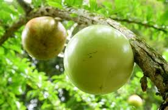

Sejarah Majalengka
Majalengka memiliki sejarah panjang yang berakar dari masa Kerajaan Sunda Galuh, dengan wilayah yang dahulu dikenal sebagai Sindangkasih. Nama "Majalengka" berasal dari legenda lokal, yaitu "Maja" (buah maja) dan "Lengka" (hilang), yang melambangkan hilangnya pohon maja di daerah tersebut. Sejarahnya semakin berkembang ketika pada 11 Februari 1840, Majalengka resmi ditetapkan sebagai kabupaten oleh pemerintah kolonial Belanda dalam rangka pengaturan administratif di Jawa.